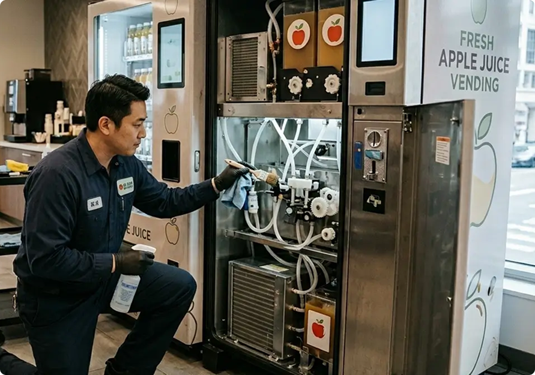

How to Maintain a Commercial Apple Juice Machine for Long-Term Use

Machines are one of the most important factors in running a successful business in the automated vending machine industry. You need to be extra careful with machine maintenance if you run apple juice vending machines since you are serving consumable products.
Overall machine status can impact your apple juice quality, hygiene standards, and brand image. The primary reasons to clean apple juice maker machines are to offer safe and clean drinks, maintain positive customer perception, and enhance the lifespan of the machines. In this article, we will provide some tips on how to maintain a commercial apple juice machine properly.
Keep the Exterior of the Machine Clean at All Times
First impression is important to generate purchases in an automated fruit juice vending machine business. Visible cleanliness enhances customer confidence and trust. If the machine is clean and maintained well, customers are more likely to make the purchase.
Since the machine is used by a number of customers daily, multiple external wipe-downs are necessary every day. You must clean the exterior of the machine, and high-touch areas such as the screen and payment display. As the machine is serving fresh fruit beverages, you will need to conduct immediate cleaning if the apple juice spills during the process.
Clean Interior Components
Interior cleaning is also vital as the internal machine parts are used to prepare the apple juice. In an apple juice maker machine, there are common conditions such as apple pulp oxidation, residue stuck in filters, and so on. Therefore, you need to clean the interior parts with extra care. Internal parts such as the juice extraction chamber, filters, pulp container, and dispensing nozzle need to be cleaned at least once a day. If your machine is placed in a high-traffic area, you should clean the internal components every 3 to 4 hours. In that way, you can offer fresh and healthy apple juice.
Use the Right Cleaning Materials
The cleaning process will not be effective and even damage the machine if you do not use the right cleaning materials. You should use warm water and mild detergents to clean the machine instead of scrubbing the apple juicer with harsh chemicals. Next, you must use soft brushes or sponges when cleaning to avoid damaging the machine body.
Especially when you are cleaning the interior of the machine, you need to use food-safe sanitizers to keep the machine and apple juice you serve clean, safe, and healthy.
Follow the Manufacturer's Manual
The next important tip is to follow the manufacturer's manual. People usually ignore the manufacturer's guide. It does not make much difference for domestic electronic gadgets, but it is important for commercial fruit juice vending machines.
There are a number of apple juice maker machines of different models that have unique maintenance requirements. Details of the machine and maintenance requirements are usually explained in the manual. Following this manufacturer's guide can reduce the cleaning time and improve the result of maintenance.
Train Staff with Structured Procedure
As a business owner, you can prepare a regular maintenance routine and train your staff properly. There might be:
- Daily routines such as exterior wipe-downs and internal component checking
- Weekly routines such as deep cleaning and checking the seals
- Monthly routines such as motor inspection and hygiene review
You can modify the routine based on customers' buying patterns and sales. You can also reference the manufacturer's guide to prepare a Standard Operating Procedure (SOP). In this way, your staff will be well-trained for machine maintenance and your business will be handled by a competent person.
Final Thoughts
Maintaining a machine properly is important not only to maintain the quality and lifespan of the machine, but it also helps in generating more sales and developing a positive brand image. In self-service apple juice vending machine businesses, the machines are the face of your company that directly interacts with customers. Moreover, businesses in the beverage industry need extra care in maintenance to ensure the quality of your beverage, including safety, taste, and freshness.
We offer commercial-grade Squeeze Me Apple Juice Vending Machines which sell fresh and healthy apple juice. We secure high-traffic locations for our franchisees to maximize their profit. You can operate an apple juice vending machine business even if you have limited technical expertise because we provide full support starting from installation and setup to ongoing support. As we also provide training programs to ensure your readiness, contact us today to start a profitable apple juice vending machine business.